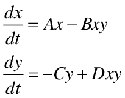
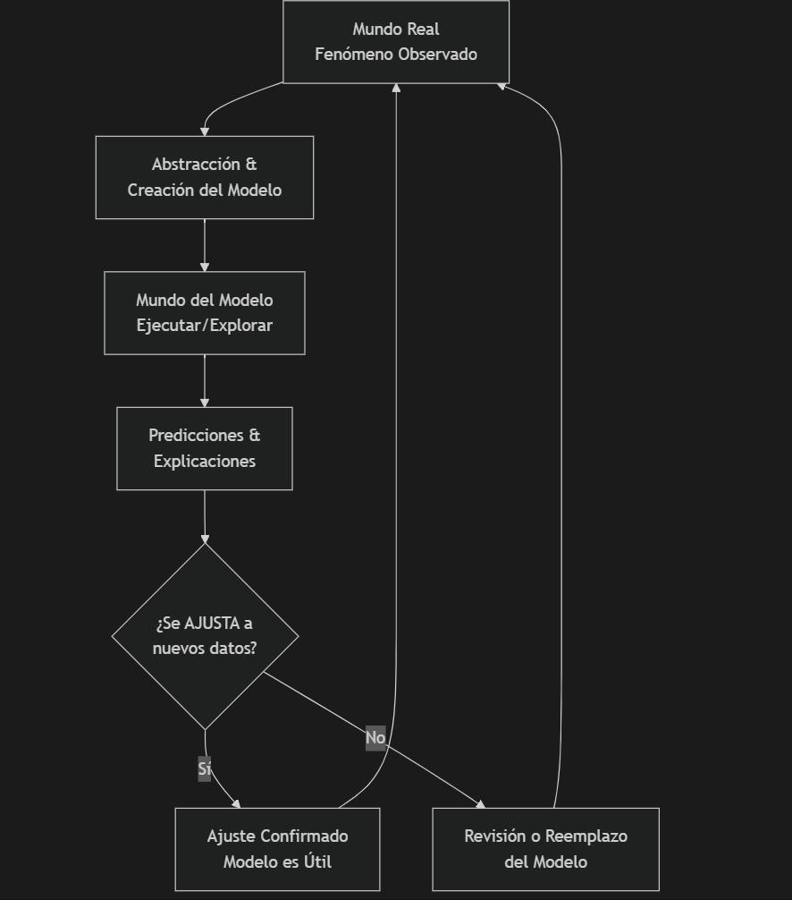

Abstrayendo la realidad para comprenderla
Modelos científicos y algorítmica utilizando herramientas de programación (Python y JavaScript)
Explorar modelosEcuaciones de Lotka-Volterra
Son ecuaciones diferenciales no lineales de primer orden que modelan la dinámica entre dos especies en interacción (depredador y presa) y con ellas podemos predecir cómo varían sus poblaciones a lo largo del tiempo.
Ver más
¿Qué es un modelo científico?
Aunque no existe un consenso real sobre la ontología de los modelos científicos, sabemos que representan de manera simplificada ciertos aspectos de la realidad —ya sean objetos, sistemas, fenómenos o procesos—. Este puente entre la teoría científica y la realidad concreta permite predecir fenómenos, prevenir desastres o mejorar la calidad de vida. Sin embargo, al ser solo una imagen de la realidad, pueden favorecer formas de tecnocracia, control predictivo y alienación de la experiencia humana.
OJO es importante recordar que estamos abstrayendo y simplificando la realidad, esto no es la realidad misma.
